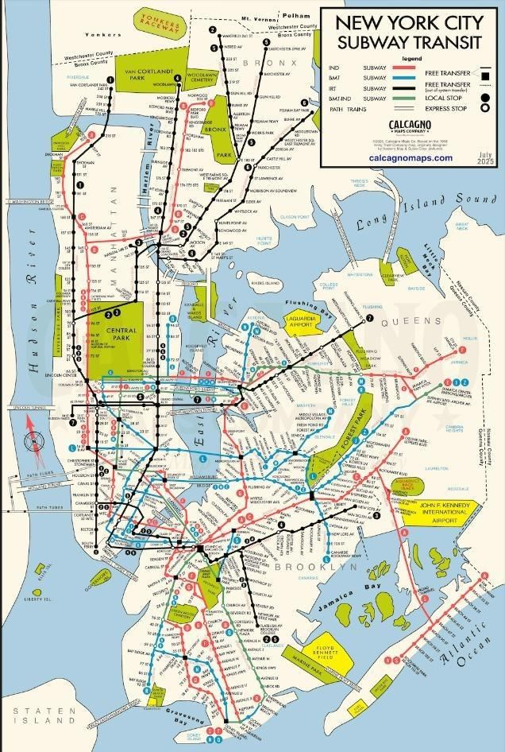
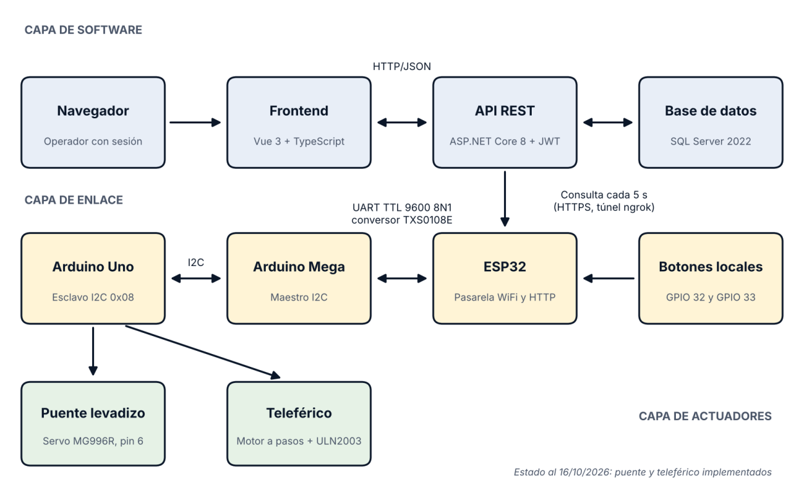
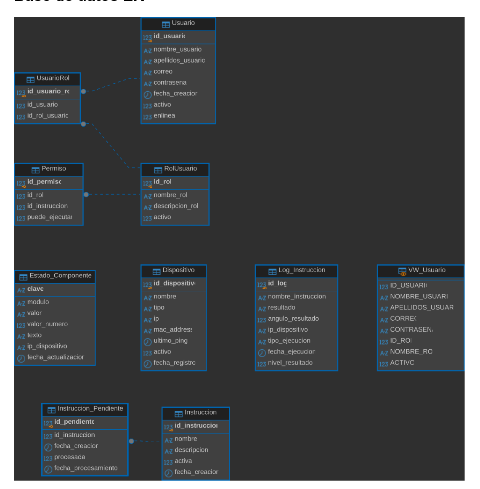
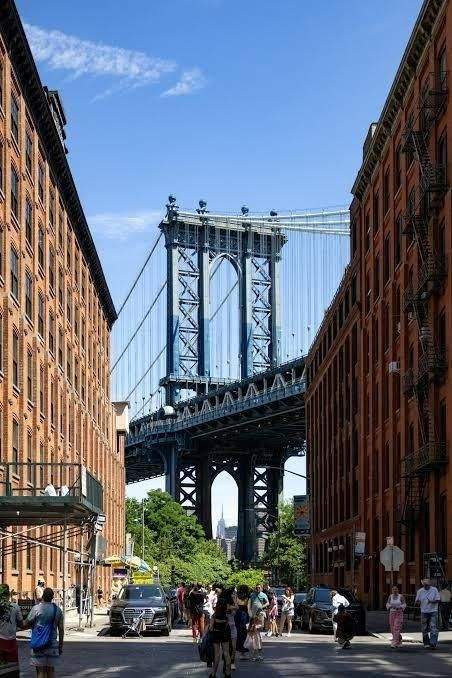
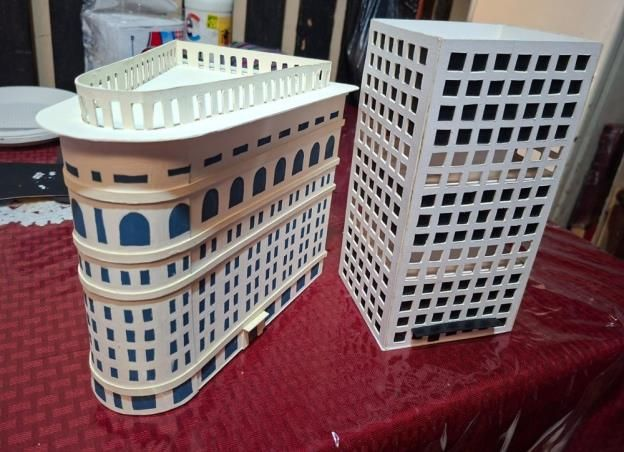
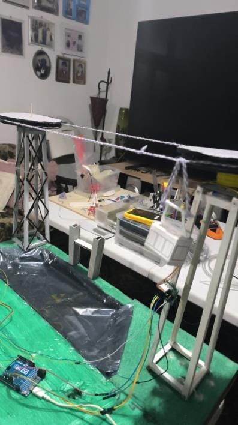
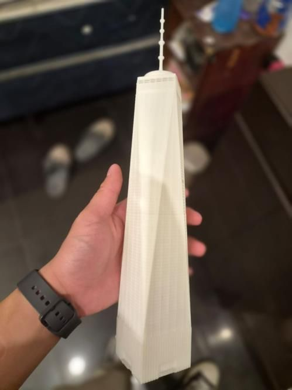
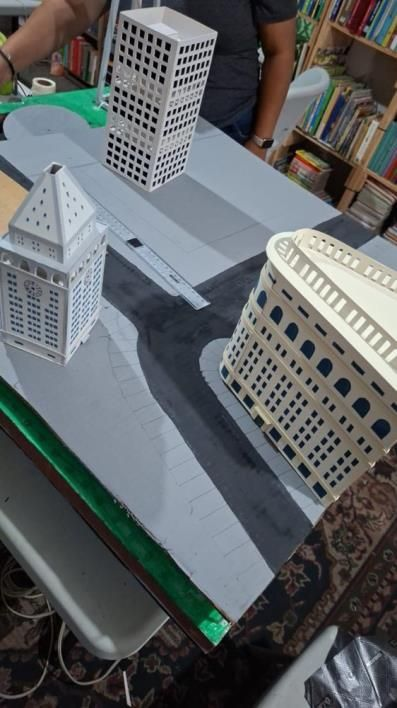
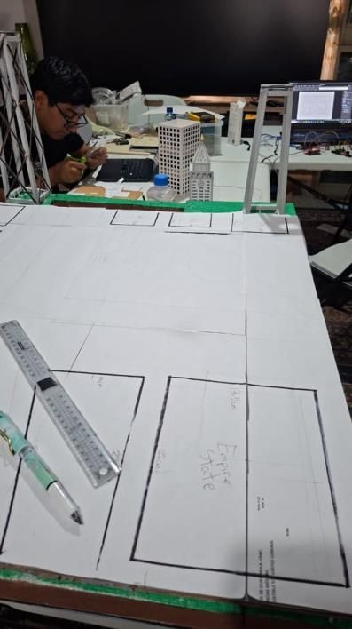
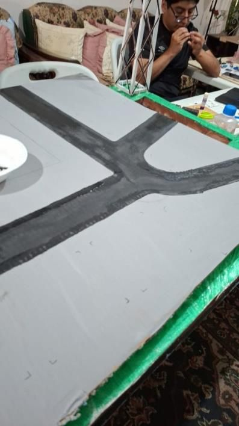

Transporte
Medios terrestres y ferroviarios conectan los sectores. Sistemas distintos para una misma necesidad.
Arquitectura de Computadoras I · Fase final
Maqueta automatizada de Nueva York donde cada lugar real funciona como un subsistema independiente. Una orden nace en el navegador, cruza tres protocolos y termina moviendo un servo o un motor a pasos.
Presentación final: 31 de octubre de 2026
00 · Nueva York como sistema
Nueva York funciona porque transporte, energía, edificios y control trabajan al mismo tiempo, cada uno con su función y dependiendo de los demás. La maqueta reproduce esa idea a escala.
Medios terrestres y ferroviarios conectan los sectores. Sistemas distintos para una misma necesidad.
Calles, túneles y puentes. Cada vía necesita señalización y control del tráfico.
Cada rascacielos es un pequeño sistema con energía, circulación, seguridad y comunicaciones.
Sostiene a los demás subsistemas. Una falla afecta edificios, transporte y comunicaciones.
Semáforos y señales usan información para coordinar vehículos y personas.
Agua, residuos y mantenimiento deben estar disponibles todo el tiempo.

01 · Qué comunicación se está haciendo
El sistema no usa un solo protocolo. Cada salto usa el que mejor encaja con su distancia y con el hardware que conecta. La orden viaja como texto desde la interfaz hasta el actuador y la respuesta regresa por el mismo camino.
El operador inicia sesión y pulsa un botón. El frontend llama a un endpoint como POST /api/puente/abrir con el token JWT en cada solicitud. El token expira a los 120 minutos.
La API no habla con el hardware. Inserta la orden, por ejemplo SERVO_SUBIR, en la tabla Instruccion_Pendiente de SQL Server 2022 y responde de inmediato. La cola es la propia tabla, leída con bloqueo pesimista.
El ESP32 pregunta cada 5 segundos con GET /api/instrucciones/pendientes. Cuando termina, informa el resultado con POST /api/instrucciones/respuesta. Un túnel ngrok le permite alcanzar la API local. Su servidor HTTP del puerto 80 solo sirve para diagnóstico.
La orden baja por UART a nivel TTL con 9600 baudios, 8 bits de datos, sin paridad y 1 bit de parada. Usa Serial2, con RX en el GPIO16 y TX en el GPIO17. Los mensajes son texto ASCII terminado en salto de línea. El conversor TXS0108E protege al ESP32, que no tolera 5 V. Un PING cada 3 segundos confirma que el Mega sigue vivo, y se marca fuera de línea tras 10 segundos sin respuesta.
El Mega es el maestro I2C y el único que inicia el bus. El esclavo 0x08 mueve el servo del puente y el motor a pasos del teleférico. Tras cada comando el Mega espera la respuesta y la lee, por ejemplo RESP POS:115.
Segundo esclavo I2C, dedicado al Empire State Building. Mueve el motor a pasos del elevador, un LED y lee los fines de carrera. Responde el piso y los pasos con un formato como NIVEL:03|PAS:01234.
02 · Qué estructura se realiza
Cada capa solo conoce a la que tiene al lado. Por eso un subsistema nuevo se agrega con nuevas instrucciones en la base de datos y nuevos comandos en el esclavo, sin tocar el resto.
Recibe las órdenes del operador y las registra como instrucciones pendientes.
Lleva cada instrucción desde la red hasta el actuador y trae la respuesta de vuelta.
Ejecuta el movimiento físico de cada lugar de la maqueta.

La tabla Instruccion_Pendiente funciona como cola. Log_Instruccion es la bitácora con el resultado, el ángulo, la dirección IP y el tiempo de respuesta.
La tabla Permiso define qué rol puede ejecutar cada una. Los roles son Usuario Básico, Empleado y Administrador.
/api/authlogin, registro y roles/api/puenteabrir, cerrar, estado y log/api/telefericoavanzar, regresar, parar y log/api/instruccionespendientes, respuesta y local| Capa | Tecnología | Estándar | Función |
|---|---|---|---|
| Presentación | Vue 3 y Vite | SPA | Cliente que consume la API |
| Peticiones | Axios | REST con interceptores | Envía el token en cada solicitud |
| Sesión | JWT HS256 | RFC 7519 | Autenticación sin estado |
| API | ASP.NET Core 8, Swagger | REST, OpenAPI 3 | Endpoints y documentación |
| Datos | Dapper y SqlClient | TDS sobre TCP | Consultas y procedimientos almacenados |
| Persistencia | SQL Server 2022 en Docker | T-SQL | Datos y cola de instrucciones |
| Enlace inalámbrico | ESP32 con WiFi | IEEE 802.11 b/g/n | Pasarela entre la red y la maqueta |
| ESP32 a Mega | UART, Serial2 | 9600 8N1, TTL | Transporte de comandos |
| Adaptación | TXS0108E | 3.3 V a 5 V | Nivel físico |
| Mega a esclavos | I2C, Wire.h | 100 kHz, 7 bits | Bus de control local |
| Actuadores | Servo.h, Stepper.h, GPIO | PWM 50 Hz | Movimiento y sensado |
Es el único que inicia el bus I2C. Decide a qué esclavo hablar, traduce la instrucción y espera el estado. Frente al ESP32 es esclavo por UART y solo recibe líneas de texto.
Son pasivos: Wire.onReceive ejecuta y Wire.onRequest responde, nunca inician tráfico. El 0x08 mueve el servo del pin 6 y el motor a pasos de los pines 8 a 11. El 0x09 mueve el elevador, un LED y los fines de carrera.
No es maestro ni esclavo I2C. Lleva las órdenes de la red a la UART del Mega y devuelve los resultados a la API.

03 · Componentes importantes
Filtra por grupo para ver qué pieza cumple cada función dentro del sistema.
Pasarela WiFi
Consulta la API cada 5 segundos, atiende un servidor HTTP en el puerto 80 y lee los botones físicos. Trabaja a 3.3 V.
Maestro I2C
Recibe comandos por Serial1 a 9600 baudios, escanea el bus I2C al arrancar y reenvía cada comando al esclavo.
Esclavo I2C 0x08
Esclavo 0x08. Controla el servo del puente y el motor a pasos del teleférico. Responde su posición con el formato POS:ddd.
Conversor de nivel lógico
Traslada señales entre los 3.3 V del ESP32 y los 5 V del Mega en ambos sentidos.
GPIO 32 y 33 del ESP32
Permiten operar el puente sin pasar por la API. El ESP32 notifica la pulsación a /api/instrucciones/local.
Energía
Fuente de 12 V y 5 A con reguladores step-down. El servo exige alimentación estable e independiente de la lógica.
Puente levadizo
Conectado al pin 6 del Uno. Recorre de 115 a 180 grados, un grado por ciclo con pausa de 20 ms.
Teleférico
Conectado a los pines 8 a 11 del Uno. Avanza y retrocede por número de pasos, 3000 por defecto.
Elevador, I2C 0x09
2048 pasos y 10 RPM, en el esclavo 0x09. Representa al Empire State Building y se apoya en fines de carrera en los pines 12 y 13.
Semáforo
Con resistencias limitadoras. Su secuencia depende del estado del puente levadizo.
Interfaz web
TypeScript, Vite, Pinia y Axios con interceptores JWT. Páginas de sesión, panel, puente, teleférico y Central Park.
API REST
Swagger y autenticación JWT con roles. Expone las rutas que consumen la web y el ESP32.
Persistencia
Corre en un contenedor Docker. Guarda usuarios, roles, la cola de instrucciones y la bitácora.
04 · Simulador
Envía una orden y observa cómo espera en la cola hasta la siguiente consulta del ESP32. Desactiva una respuesta para ver cómo el sistema reporta el error.
Esperando una instrucción.
Semáforo en verde con el puente cerrado.
megaOnlinetrueesclavo1OnlinetrueLa espera en la cola llega hasta 5 s. La latencia total de la bitácora suma además la espera de respuesta del Mega y el recorrido animado del paquete.
| # | Instrucción | Origen | Resultado | Valor | Latencia |
|---|---|---|---|---|---|
| Sin ejecuciones todavía. | |||||
Simulación didáctica. La consulta de 5 s, el PING de 3 s, los 10 s de tiempo límite y la espera de respuesta de 3.5 s salen del informe final. La pista del teleférico y la regla del semáforo son ilustrativas.
05 · El proyecto en video
Recorrido grabado por el equipo con la maqueta terminada, el panel web y los subsistemas. Toca un capítulo para saltar a esa parte.
06 · Los lugares que recreamos
Cada zona se eligió por su respaldo histórico y por lo que permite automatizar en 2 metros.
Una de las intersecciones más transitadas del mundo y referencia del control de tránsito. En la maqueta el semáforo se relaciona con el puente levadizo.
La fuente Bethesda se inauguró en 1873 y conmemora la llegada del agua potable. Esta zona representa la fuente y el parque.

Puente de elevación vertical inaugurado en 1955. Su tramo central se eleva en la maqueta con un servo. La foto es ilustrativa: muestra el Manhattan Bridge.
Inaugurado en 1931, es la referencia del desarrollo vertical y de los elevadores de alta velocidad. En la maqueta es un edificio con pisos y un elevador movido por un motor a pasos.
Primer tranvía aéreo de uso masivo en Norteamérica, inaugurado en 1976. Cruza el East River en unos tres minutos.
Inaugurada en 1886 en Liberty Island. No es un sistema funcional, pero identifica la maqueta como Nueva York desde la zona del río.
07 · Subsistemas
Cada elemento tiene su referencia real, su propio conjunto de instrucciones y su estado de avance.
Puente de elevación vertical inaugurado en 1955 que conecta la isla Roosevelt con Queens. En la maqueta su tramo central se eleva con un servomotor y se opera desde la web y desde botones físicos.
Primer tranvía aéreo de uso masivo en Norteamérica, inaugurado en 1976. En la maqueta una cabina suspendida se desplaza sobre un cable tensado entre dos torres, movida por un motor a pasos.
A 5 RPM el recorrido mecánico tarda mucho más que la comunicación.
Inaugurado en 1931, es la referencia del desarrollo vertical. En la maqueta es un edificio con pisos visibles y un elevador interior, como se ve en el video. El esclavo 0x09 sensa los extremos del recorrido con fines de carrera.
El semáforo no funciona solo. Está relacionado con el puente levadizo: mientras el tramo del puente está elevado, el tránsito vehicular debe detenerse. Es una regla de enclavamiento que usa el estado del puente como bandera.
Puedes ver la relación en el simulador, en la maqueta de la sección anterior.
Mini bomba de agua sumergible que simula una ligera corriente.
Mini bomba de agua sumergible independiente para el efecto de agua en movimiento. En el video se ve rodeada de jardines.
LEDs de iluminación y una fotoresistencia para encender el alumbrado automáticamente.
El agua es el riesgo de mayor severidad del proyecto. La mitigación exige canalizar los cables y separar físicamente las zonas húmedas.
08 · Así se construyó la maqueta
Fotografías del taller del equipo, tomadas del informe de la Fase II, con la construcción al 16 de octubre de 2026. Toca una foto para verla en grande.






09 · Cómo ayuda a entender una arquitectura heterogénea y asíncrona
La maqueta es un ejemplo físico de dos conceptos del curso. Cada uno se puede señalar en un punto concreto del sistema.
Las piezas son distintas entre sí en hardware, voltaje, lenguaje y protocolo, y aun así cooperan.
| Nodo | Plataforma | Voltaje | Enlace |
|---|---|---|---|
| Interfaz | Vue 3, TypeScript | No aplica | HTTP |
| API | ASP.NET Core 8, C# | No aplica | HTTP, SQL |
| ESP32 | Xtensa, 32 bits | 3.3 V | WiFi, UART |
| Mega y Uno | AVR, C++ | 5 V | UART, I2C |
El conversor TXS0108E existe precisamente porque 3.3 V y 5 V conviven en la misma cadena.
Quien da la orden no espera a que se ejecute. La orden se guarda y cada nodo la toma cuando le toca.
megaOnline y esclavo1Online informan si un nodo dejó de responder.Valores del informe final: el peor caso suma una consulta recién perdida y la espera de respuesta, unos 8.5 segundos. El promedio ronda los 2.5 segundos.
A eso se suma el tiempo mecánico: el teleférico a 5 RPM tarda mucho más que la comunicación. Esa latencia es el precio de desacoplar la web del hardware. A cambio, los botones físicos operan el puente sin pasar por la API.
Si el ESP32 se cae, el sistema queda aislado aunque el Mega y los esclavos sigan vivos. Su servidor local solo sirve para diagnóstico, no es una ruta alternativa.
CORS abierto, contraseña de SA en texto plano y TrustServerCertificate activo son aceptables en desarrollo, pero se declaran como deuda técnica y no como diseño final.
SERVO_SUBIR viaja sin traducción por UART e I2C. Simplifica la depuración, pero acopla el esclavo a la API: renombrar una instrucción en la base obliga a reflashear los Arduinos.
No hay CRC, ni confirmación por trama, ni número de secuencia. La confiabilidad se apoya en el idPendiente que asigna el backend.
| Ausente | Consecuencia o justificación |
|---|---|
| WebSocket, SignalR o SSE | No hay empuje desde el servidor: la interfaz se actualiza por polling REST, con latencia mínima cercana a 5 s. |
| MQTT, AMQP, Kafka o RabbitMQ | La cola es una tabla SQL. Sirve para un dispositivo y no escala a muchos. |
| gRPC o Protobuf | Todo es JSON en texto. Consume más pero se lee en el monitor serie. |
| Buses industriales como Modbus o CAN | Se eligió I2C por la simplicidad del cableado en la maqueta. |
| BLE, LoRa o Zigbee | El ESP32 usa WiFi directo a la red local. |
| OAuth 2.0 | El JWT es propio, con clave simétrica y sin refresh token. |
10 · Conclusión sobre el proyecto
Una arquitectura modular puede coordinar siete subsistemas, puente, teleférico, semáforos, elevador, fuente, río y parque, bajo un mismo esquema de control.
I2C comunica al controlador central con los nodos periféricos y la UART de niveles lógicos enlaza al ESP32 con el Arduino Mega. Los dos protocolos se complementan.
El control por estados, las banderas y los tiempos límite coordinan los actuadores y evitan órdenes simultáneas incompatibles.
La cadena HTTP, UART e I2C desacopla la web del hardware. Cuesta latencia, unos 8.5 s en el peor caso, pero permite sustituir un subsistema sin tocar los demás.
El agua en el río y la fuente es el riesgo de mayor severidad. Su mitigación debe resolverse desde la construcción y no después.
La memoria del ESP32 y el Arduino, la dependencia de la API y la seguridad declarada como deuda técnica condicionan la estabilidad si no se atienden.
Hito 3, presentación final: 31 de octubre de 2026.